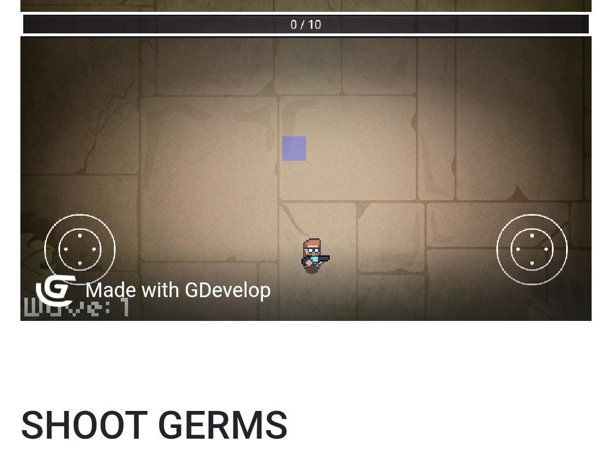
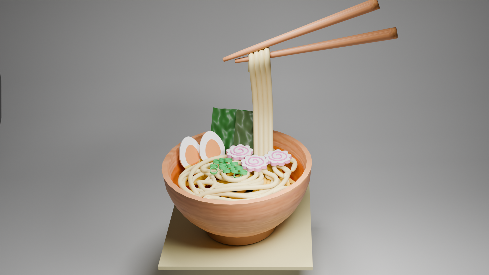

Pemrograman GIM
Proses pembuatan perangkat lunak gim video menggunakan bahasa pemrograman, algoritma, dan alat pengembangan khusus untuk menciptakan pengalaman bermain yang interaktif dan lengkap.

Desain Grafis
Seni komunikasi visual yang menggunakan elemen seperti gambar, teks, warna, dan bentuk untuk menyampaikan pesan secara efektif dan menarik.

Animasi 3D
Proses menciptakan gambar bergerak dalam ruang tiga dimensi (panjang, lebar, dan tinggi) menggunakan perangkat lunak komputer, sehinngga objek dan karakter terlihat lebih realiistis dan memiliki kedalaman.

Mapel Pilihan GIM (Pemrograman WEB)
Proses membuat, mengelola, dan memelihara aplikasi web yang berjalan di internet melalui peramban (browser)